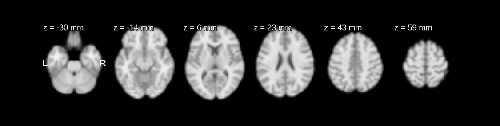
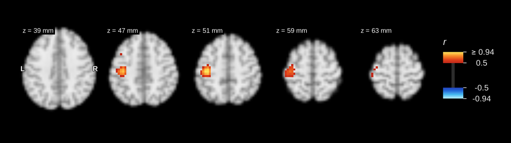

neuroim2 reads, manipulates and writes volumetric brain images in R. Its objects behave like ordinary arrays – you can index them, do arithmetic on them, compare them – but they never forget where they are in space: what comes back from an operation is still an image, with its affine attached.
It covers the ground between a file on disk and a statistical model: NIfTI and AFNI I/O, 3D volumes and 4D time-series in dense, sparse and memory-mapped forms, coordinate systems, regions of interest and searchlights, resampling, spatial filtering, and slice plots. It is the successor to neuroim.
Website: https://bbuchsbaum.github.io/neuroim2/ · CRAN: https://cran.r-project.org/package=neuroim2
Installation
install.packages("neuroim2")Daily builds are on R-universe, and the development version is on GitHub:
install.packages("neuroim2",
repos = c("https://bbuchsbaum.r-universe.dev", "https://cloud.r-project.org"))
# install.packages("remotes")
remotes::install_github("bbuchsbaum/neuroim2")Five minutes with neuroim2
Everything below runs as written; the two images ship with the package.
Read an image and look at it
library(neuroim2)
anat <- read_vol(system.file("extdata", "mni_downsampled.nii.gz", package = "neuroim2"))
plot_montage(anat, zlevels = seq(-30, 60, by = 18), unit = "mm", ncol = 6, style = "dark")
An array that knows where it is
A volume indexes and computes like an array, and carries its geometry with it:
dim(anat)
#> [1] 48 57 48
spacing(anat) # voxel size, mm
#> [1] 4.02083 4.01754 4.02083
affine_to_axcodes(trans(anat)) # which way the grid axes run
#> [1] "R" "A" "S"
class(anat > 5000)[1] # a comparison is still an image
#> [1] "LogicalNeuroVol"That geometry is what turns a millimetre coordinate into a voxel, and a voxel back into millimetres. Voxel indices are 1-based, as everywhere in R.
round(coord_to_grid(anat, c(0, 0, 0)), 1) # the voxel at the MNI origin
#> [1] 24.9 33.9 20.4
round(index_to_coord(anat, which.max(anat))) # where the brightest voxel is, mm
#> [,1] [,2] [,3]
#> [1,] -44 -3 -30From a time-series to a map
A NeuroVec is a 4D image: a time-series at every voxel. With real data you would call read_vec("bold.nii.gz"); here simulate_fmri() makes a spatially smooth one on the template grid so the example is self-contained.
brain <- as.mask(anat > 3000)
bold <- simulate_fmri(brain, n_time = 80, spatial_fwhm = 14, seed = 1)
dim(bold)
#> [1] 48 57 48 80A seed-based correlation map is four steps: put a sphere at a millimetre coordinate, average the time-series inside it, correlate that with every voxel in the brain, and put the result back on the grid.
centre <- round(coord_to_grid(anat, c(-40, -24, 52)))
seed <- spherical_roi(brain, centre, radius = 8) # radius in mm
seed_ts <- rowMeans(values(series_roi(bold, seed))) # scans x voxels -> scans
vox <- which(brain)
r <- cor(series(bold, vox), seed_ts) # one r per brain voxel
r_map <- NeuroVol(as.vector(r), space(anat), indices = vox)
round(index_to_coord(r_map, which.max(r_map))) # the peak, back in mm
#> [,1] [,2] [,3]
#> [1,] -40 -24 51
plot_overlay(anat, r_map, zlevels = c(40, 46, 52, 58, 64), unit = "mm", ncol = 5,
ov_thresh = 0.5, cbar_title = "r", style = "dark")
The data are simulated, so the map shows only what was put in – voxels near the seed share its signal because the simulation is spatially smooth. The steps are the ones a real analysis uses.
What is in the package
-
Reading and writing – NIfTI (
.nii,.nii.gz) and AFNI (.HEAD/.BRIK), with header inspection before you load:read_vol(),read_vec(),read_header(),write_vol(),write_vec() -
Containers –
NeuroVol(3D) andNeuroVec(4D), each in dense, sparse, memory-mapped, file-backed and clustered (parcel) forms that share one interface - Coordinates – conversion between linear index, grid index and world millimetres, orientation codes, reorientation and deobliquing
- Regions and searchlights – spherical, cuboid and parcel ROIs; exhaustive, random and clustered searchlights, in parallel if you want
-
Resampling – onto another image’s grid, to a new voxel size, or to a new orientation:
resample_to(),downsample(),reorient() -
Filtering – Gaussian, bilateral and guided filters, Laplacian sharpening, connected components:
gaussian_blur(),bilateral_filter(),conn_comp() -
Plotting – slice montages, orthogonal views, statistical overlays and registration checks, built on ggplot2:
plot_montage(),plot_ortho(),plot_overlay()
Coming from another package
neuroim2 exchanges images with RNifti and oro.nifti objects directly, so it can sit in the middle of a pipeline that uses RNiftyReg, neurobase or fslr without writing files in between:
img <- RNifti::readNifti(system.file("extdata", "mni_downsampled.nii.gz", package = "neuroim2"))
vol <- as_neuro(img) # RNifti or oro.nifti image -> NeuroVol / NeuroVec
img2 <- as_nifti(vol) # and back, with the affine
all.equal(trans(vol), trans(anat))
#> [1] TRUEIf you know nibabel or nilearn, most of what you reach for has a direct counterpart:
-
nib.load(f)→read_vol(f),read_vec(f), orread_image(f)to let the header decide -
img.header→read_header(f),header(x) -
img.get_fdata()→as.array(x) -
img.affine→trans(x) -
img.header.get_zooms()→spacing(x) -
nib.aff2axcodes(img.affine)→affine_to_axcodes(trans(x)) -
nib.as_closest_canonical(img)→as_canonical(x) -
apply_affine(img.affine, ijk)→grid_to_coord(x, ijk + 1) -
resample_to_img(src, target)→resample_to(src, target) -
nib.save(img, f)→write_vol(x, f),write_vec(x, f)
The one habit to change is in that + 1: grid indices are 1-based here. Voxel (1, 1, 1) sits at the origin of the affine, where nibabel has (0, 0, 0). World coordinates are RAS+ millimetres in both.
Learn more
The articles on the website are written to be read in order, then by task.
Learn – about 45 minutes end to end
- A tour – the package in one sitting
- Spaces and coordinates – the affine, orientation codes, and voxel-to-millimetre conversion
- Volumes and vectors – building, slicing and combining the containers
- Reading and writing – file formats, headers, and working with other packages
Do – read the one you need
Scale – when the data stops fitting in memory
Every function is listed in the reference. Bugs and questions go to the issue tracker.
Albers theme
This package uses the albersdown theme. Existing vignette theme hooks are replaced so albers.css and local albers.js render consistently on CRAN and GitHub Pages. The defaults are configured via params$family and params$preset (family = red, preset = homage). The pkgdown site uses template: { package: albersdown }.